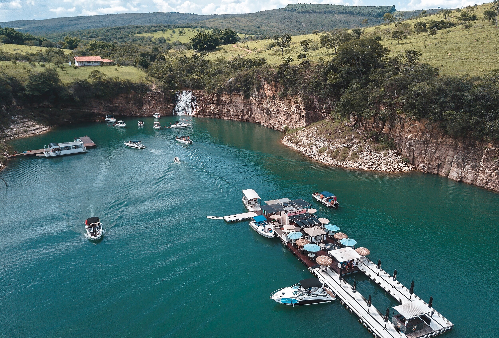
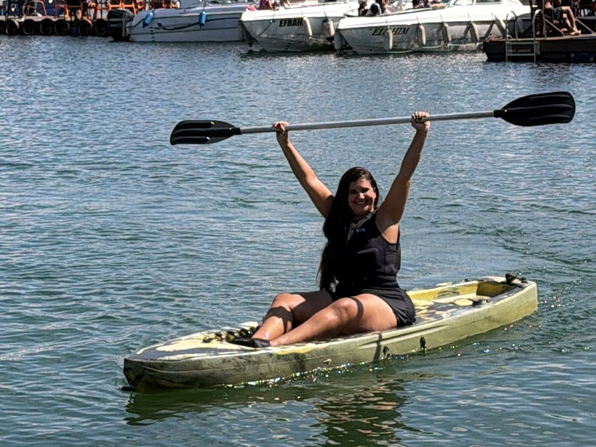
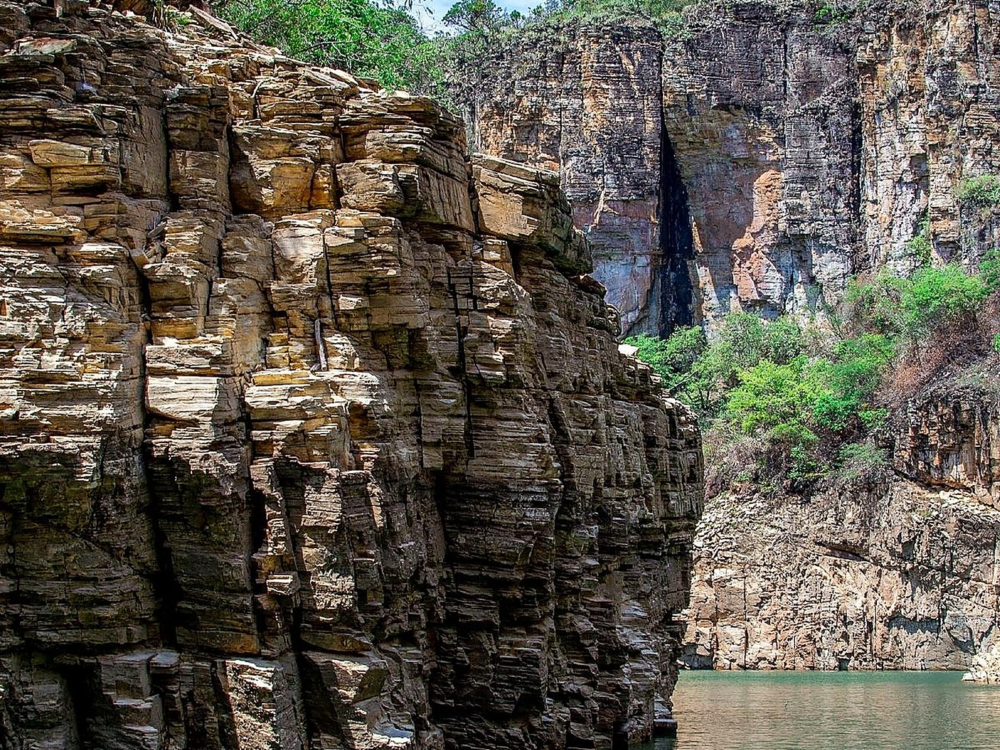
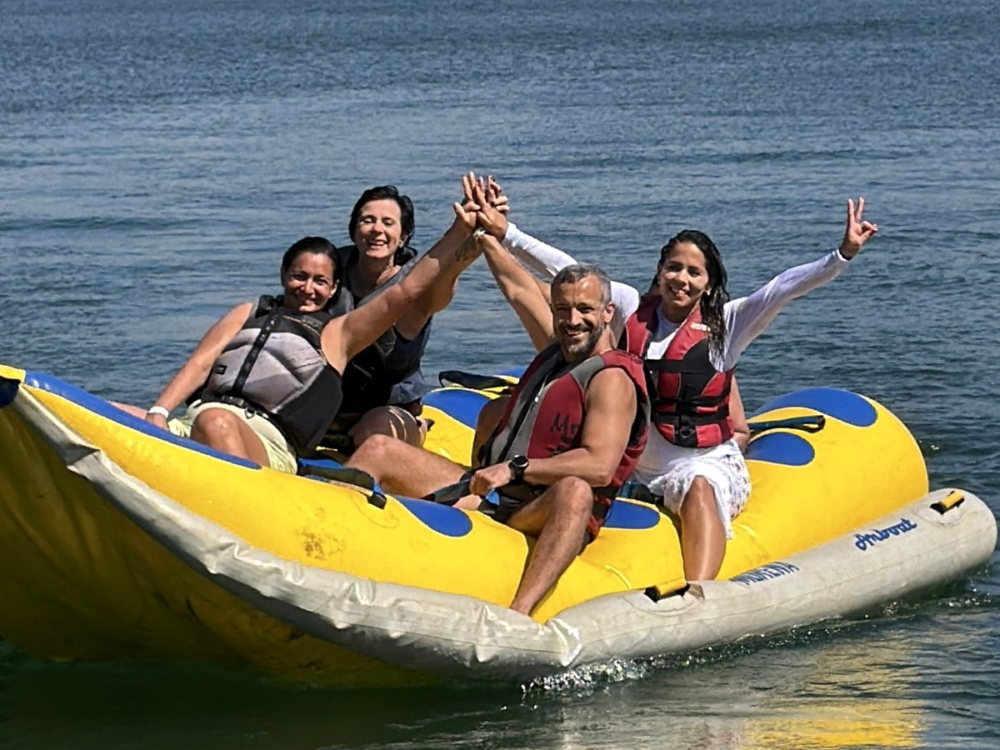

Viva os Cânions de Capitólio, a Lagoa Azul e o Vale dos Tucanos.
Navegue pelas águas verde-esmeralda do Mar de Minas com a piloto Kelli Roque. Passeios de lancha privativos ou compartilhados com som Bluetooth, cooler a bordo, paradas sem pressa para banho e fotos incríveis.
Cânions de Capitólio✦Lagoa Azul & Bar Flutuante✦Vale dos Tucanos✦Ponte do Rio Turvo · KM 306✦Lancha Privativa ou Compartilhada✦Nota 5,0 ★ no Google (174 Avaliações)✦Pet Friendly & Cooler a Bordo✦Cânions de Capitólio✦Lagoa Azul & Bar Flutuante✦Vale dos Tucanos✦Ponte do Rio Turvo · KM 306✦Lancha Privativa ou Compartilhada✦Nota 5,0 ★ no Google (174 Avaliações)✦Pet Friendly & Cooler a Bordo✦
Roteiro Oficial pelo Lago de Furnas
As paradas mais bonitas do Mar de Minas
Embarque na Ponte do Rio Turvo (MG-050, KM 306) e navegue pelos cenários mais famosos de Capitólio com paradas tranquilas para mergulho, fotos e drinks.
O cenário mais impressionante de Minas Gerais. Navegamos pelo corredor de paredões de rocha quartzítica até as famosas quedas d'água cristalinas, com parada para banho nas águas verde-esmeralda usando coletes e macarrões flutuantes.
📸 Fotos nos Paredões🏊 Parada para Banho💦 Quedas d'Água
Parada 02 · Águas Translúcidas


Cachoeira, Piscina Natural & Bar Flutuante
Lagoa Azul
Uma das paradas mais amadas do Lago de Furnas! A Lagoa Azul encanta pela água extremamente limpa em tons dourados e esmeralda, queda d'água refrescante e estrutura de bar flutuante para saborear drinks e porções à beira da lancha.
🍹 Bar Flutuante✨ Água Cristalina🎵 Clima Descontraído
Parada 03 · Refúgio de Águas Calmas


Enseada Preservada & Banho em Família
Vale dos Tucanos
Cercado por paredões imponentes e natureza intocada, o Vale dos Tucanos tem águas super tranquilas e sem correnteza. É o ponto perfeito para mergulhar com crianças, relaxar com macarrão flutuante e curtir o silêncio da serra mineira.
👨👩👧 Ideal para Crianças🌿 Natureza Preservada🛟 Águas Calmas
Atendimento Rápido com Kelli & Naiara
Monte seu passeio sob medida
Escolha se prefere lancha privativa ou passeio compartilhado, marque as paradas que quer conhecer e envie os detalhes direto para o nosso WhatsApp para consultar disponibilidade.
Adultos12 anos ou mais
2
CriançasColetes infantis inclusos
0
Pets 🐾Cães são bem-vindos
0
Experiência Personalizada
O passeio no ritmo do seu grupo
Seja em casal, em família com crianças e idosos ou com a turma de amigos, cuidamos de cada detalhe para o seu dia em Capitólio ser inesquecível.
👨👩👧👦
Famílias & Crianças
Navegação super prudente e tranquila. Levamos você às águas calmas do Vale dos Tucanos e da Lagoa Azul com coletes infantis e macarrões flutuantes para todo mundo entrar na água com segurança.
Conecte sua playlist no som Bluetooth da lancha, traga suas bebidas para o cooler térmico a bordo e aproveite o bar flutuante da Lagoa Azul e os paredões dos Cânions de Capitólio.
Quer curtir um passeio romântico ou trazer seu cachorro junto? Na lancha privativa da Kelli Roque seu pet é super bem-vindo e a Kelli ainda registra fotos incríveis do casal em todas as paradas.
Apaixonada pelo Lago de Furnas, faço questão de conduzir cada passeio com segurança em primeiro lugar, alegria, música boa e atenção total à sua família. No WhatsApp, eu e a Naiara tiramos todas as dúvidas antes do embarque para você aproveitar Capitólio sem preocupação.
⚓ Pilotagem PrudenteCondução segura, lancha revisada e higienizada todos os dias.
📸 Fotos nos Melhores ÂngulosConhecemos a melhor luz nos Cânions, Lagoa Azul e Vale dos Tucanos.
🎵 Som Bluetooth & CoolerVocê escolhe a trilha sonora e pode trazer suas bebidas favoritas.
⭐ 174 Avaliações 5,0 ★Nota máxima no Google pelo carinho com cada passageiro.
"Passeio maravilhoso! A Kelli pilota com muita prudência, conhece cada cantinho dos Cânions de Capitólio, da Lagoa Azul e do Vale dos Tucanos, coloca música animada e ainda tira fotos incríveis da nossa família."
Fernanda & Rodrigo M.Avaliação verificada · Google
★★★★★
"Desde o primeiro contato com a Naiara no WhatsApp até o embarque na Ponte do Rio Turvo com a Kelli, tudo impecável. Lancha super limpa, cooler pronto e paradas tranquilas sem correria para curtir o Mar de Minas."
Lucas AndradeAvaliação verificada · Google
★★★★★
"Fomos com crianças e nossa cachorrinha no passeio privativo. O Vale dos Tucanos e a Lagoa Azul têm águas super calmas e cristalinas, perfeito para nadar com segurança. Experiência nota mil!"
Camila SouzaAvaliação verificada · Google
Localização Oficial · Fácil Acesso
Embarque na Ponte do Rio Turvo
Saímos diretamente do ponto mais estratégico de Capitólio, pertinho dos Cânions e da Lagoa Azul, para você aproveitar muito mais tempo curtindo as paradas.
📍 Endereço: Rodovia MG-050, KM 306 — Ponte do Rio Turvo, Capitólio - MG (CEP 37930-000)
Quais paradas fazem parte do passeio de lancha da Kelli Roque?+
Nosso roteiro visita os cartões-postais mais famosos do Lago de Furnas em Capitólio: os Cânions de Capitólio, a Lagoa Azul (com cachoeira, piscina natural e bar flutuante), o Vale dos Tucanos e a região do Lago de Escarpas, com paradas tranquilas para mergulho e fotos.
Onde fica exatamente o ponto de embarque?+
O embarque acontece na Rodovia MG-050, KM 306 — Ponte do Rio Turvo, em Capitólio - MG. Assim que confirmar sua reserva pelo WhatsApp, enviamos a localização exata e orientações de estacionamento.
Posso levar bebidas e petiscos para a lancha?+
Sim! A lancha conta com cooler térmico a bordo para manter suas bebidas geladas durante todo o passeio. Além disso, paramos no bar flutuante da Lagoa Azul caso queira pedir drinks e porções na hora.
O passeio é seguro para crianças, idosos e quem não sabe nadar?+
Totalmente seguro! A piloto Kelli Roque é elogiada nas 174 avaliações do Google pela condução prudente e atenciosa. Temos coletes salva-vidas homologados pela Marinha (adulto e infantil) e macarrões flutuantes para você boiar nas águas calmas do Vale dos Tucanos e da Lagoa Azul.
Posso levar meu cachorro (pet) no passeio?+
Sim, somos Pet Friendly nos passeios privativos! Basta selecionar quantos pets vão com você na ferramenta Monte seu Passeio.
Como faço para reservar minha data?+
É super simples: preencha o Monte seu Passeio acima com o número de pessoas, paradas e data desejada e clique em enviar para falar diretamente com a Kelli e a Naiara no WhatsApp (35) 99823-5432.